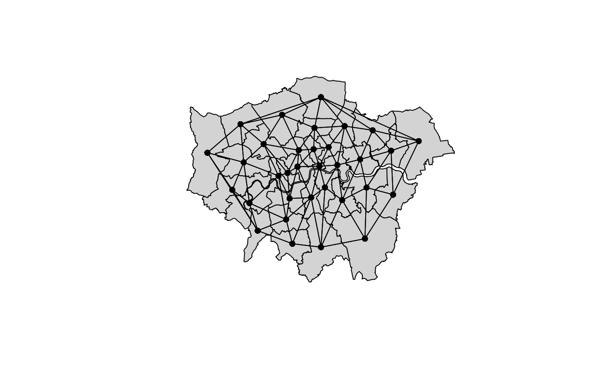
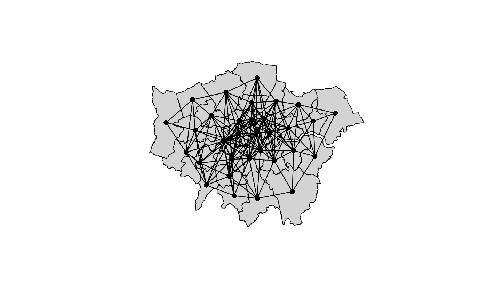

neighbormatrix.RdThe function takes a SpatialPolygonsDataFrame and computes
the neighbor penalty matrix that can be used to fit a Markov
random field, e.g., using the smooth constructor
smooth.construct.mrf.smooth.spec.
## Compute the neighborhood matrix. neighbormatrix(x, type = c("boundary", "dist", "delaunay", "knear"), k = 1, id = NULL, nb = FALSE, names = NULL, ...) ## Plot neighborhood structure. plotneighbors(x, add = FALSE, ...)
| x | An object of class |
|---|---|
| type | Which type of neighborhood structure should be used,
|
| k | For |
| id | An identifier variable for which the penalty matrix should be computed. |
| nb | Should only the neighborhood object be returned. |
| names | Specifies the column where the regions names are provided in the data
slot in the |
| add | Should the neighborhood structure be added to an existing plot? |
| … | Arguments to be passed to function |
data("LondonFire") ## Compute polygon boundary based ## neighborhood matrix. nm <- neighbormatrix(LondonBoroughs) print(nm)#> 0 1 2 3 4 5 6 7 8 9 10 11 12 13 14 15 16 17 18 19 20 21 22 23 24 #> 0 4 0 0 0 0 0 0 0 0 0 0 0 0 0 0 0 0 0 -1 -1 -1 -1 0 0 0 #> 1 0 4 -1 0 0 0 0 0 0 0 -1 0 0 0 0 0 0 0 -1 0 -1 0 0 0 0 #> 2 0 -1 6 0 0 0 0 0 0 0 -1 -1 -1 -1 -1 0 0 0 0 0 0 0 0 0 0 #> 3 0 0 0 4 -1 0 -1 0 0 0 0 0 0 0 0 0 0 0 0 -1 0 0 -1 0 0 #> 4 0 0 0 -1 5 0 -1 -1 -1 0 0 0 0 0 0 0 0 0 0 0 0 0 -1 0 0 #> 5 0 0 0 0 0 2 0 0 0 0 0 0 0 0 0 0 0 -1 0 0 0 0 0 0 0 #> 6 0 0 0 -1 -1 0 3 -1 0 0 0 0 0 0 0 0 0 0 0 0 0 0 0 0 0 #> 7 0 0 0 0 -1 0 -1 4 -1 -1 0 0 0 0 0 0 0 0 0 0 0 0 0 0 0 #> 8 0 0 0 0 -1 0 0 -1 7 -1 0 0 0 0 0 0 0 0 0 0 0 0 -1 -1 -1 #> 9 0 0 0 0 0 0 0 -1 -1 5 0 0 0 0 0 -1 0 0 0 0 0 0 0 0 0 #> 10 0 -1 -1 0 0 0 0 0 0 0 5 -1 0 0 0 0 0 0 0 0 -1 -1 0 0 0 #> 11 0 0 -1 0 0 0 0 0 0 0 -1 3 -1 0 0 0 0 0 0 0 0 0 0 0 0 #> 12 0 0 -1 0 0 0 0 0 0 0 0 -1 3 -1 0 0 0 0 0 0 0 0 0 0 0 #> 13 0 0 -1 0 0 0 0 0 0 0 0 0 -1 3 -1 0 0 0 0 0 0 0 0 0 0 #> 14 0 0 -1 0 0 0 0 0 0 0 0 0 0 -1 2 0 0 0 0 0 0 0 0 0 0 #> 15 0 0 0 0 0 0 0 0 0 -1 0 0 0 0 0 3 -1 0 0 0 0 0 0 0 0 #> 16 0 0 0 0 0 0 0 0 0 0 0 0 0 0 0 -1 5 -1 0 0 0 0 0 0 0 #> 17 0 0 0 0 0 -1 0 0 0 0 0 0 0 0 0 0 -1 4 0 0 0 0 0 0 0 #> 18 -1 -1 0 0 0 0 0 0 0 0 0 0 0 0 0 0 0 0 3 0 -1 0 0 0 0 #> 19 -1 0 0 -1 0 0 0 0 0 0 0 0 0 0 0 0 0 0 0 3 0 -1 0 0 0 #> 20 -1 -1 0 0 0 0 0 0 0 0 -1 0 0 0 0 0 0 0 -1 0 5 -1 0 0 0 #> 21 -1 0 0 0 0 0 0 0 0 0 -1 0 0 0 0 0 0 0 0 -1 -1 4 0 0 0 #> 22 0 0 0 -1 -1 0 0 0 -1 0 0 0 0 0 0 0 0 0 0 0 0 0 4 -1 0 #> 23 0 0 0 0 0 0 0 0 -1 0 0 0 0 0 0 0 0 0 0 0 0 0 -1 3 -1 #> 24 0 0 0 0 0 0 0 0 -1 0 0 0 0 0 0 0 0 0 0 0 0 0 0 -1 4 #> 25 0 0 0 0 0 0 0 0 -1 -1 0 0 0 0 0 0 0 0 0 0 0 0 0 0 -1 #> 26 0 0 0 0 0 0 0 0 0 0 0 0 0 0 0 0 0 0 0 0 0 0 0 0 0 #> 27 0 0 0 0 0 0 0 0 0 0 0 0 0 0 0 0 0 0 0 0 0 0 0 0 0 #> 28 0 0 0 0 0 0 0 0 0 0 0 0 0 0 0 0 -1 0 0 0 0 0 0 0 0 #> 29 0 0 0 0 0 0 0 0 0 -1 0 0 0 0 0 -1 -1 0 0 0 0 0 0 0 0 #> 30 0 0 0 0 0 0 0 0 0 0 0 0 0 0 0 0 -1 -1 0 0 0 0 0 0 0 #> 31 0 0 0 0 0 -1 0 0 0 0 0 0 0 0 0 0 0 -1 0 0 0 0 0 0 0 #> 32 0 0 0 0 0 0 0 0 0 0 0 0 0 0 0 0 0 0 0 0 0 0 0 0 -1 #> 25 26 27 28 29 30 31 32 #> 0 0 0 0 0 0 0 0 0 #> 1 0 0 0 0 0 0 0 0 #> 2 0 0 0 0 0 0 0 0 #> 3 0 0 0 0 0 0 0 0 #> 4 0 0 0 0 0 0 0 0 #> 5 0 0 0 0 0 0 -1 0 #> 6 0 0 0 0 0 0 0 0 #> 7 0 0 0 0 0 0 0 0 #> 8 -1 0 0 0 0 0 0 0 #> 9 -1 0 0 0 -1 0 0 0 #> 10 0 0 0 0 0 0 0 0 #> 11 0 0 0 0 0 0 0 0 #> 12 0 0 0 0 0 0 0 0 #> 13 0 0 0 0 0 0 0 0 #> 14 0 0 0 0 0 0 0 0 #> 15 0 0 0 0 -1 0 0 0 #> 16 0 0 0 -1 -1 -1 0 0 #> 17 0 0 0 0 0 -1 -1 0 #> 18 0 0 0 0 0 0 0 0 #> 19 0 0 0 0 0 0 0 0 #> 20 0 0 0 0 0 0 0 0 #> 21 0 0 0 0 0 0 0 0 #> 22 0 0 0 0 0 0 0 0 #> 23 0 0 0 0 0 0 0 0 #> 24 -1 0 0 0 0 0 0 -1 #> 25 6 0 -1 0 -1 0 0 -1 #> 26 0 3 0 -1 0 -1 0 -1 #> 27 -1 0 4 -1 -1 0 0 -1 #> 28 0 -1 -1 6 -1 -1 0 -1 #> 29 -1 0 -1 -1 6 0 0 0 #> 30 0 -1 0 -1 0 5 -1 0 #> 31 0 0 0 0 0 -1 3 0 #> 32 -1 -1 -1 -1 0 0 0 5 #> attr(,"call") #> spdep::nb2mat(neighbours = adjmat, style = "B", zero.policy = TRUE)## Plot neighborhood structures. plotneighbors(LondonBoroughs)plotneighbors(LondonBoroughs, type = "delaunay")#> #> #> #> #> #> #> #> #> #>plotneighbors(LondonBoroughs, type = "dist", d1 = 0, d2 = 0.15)